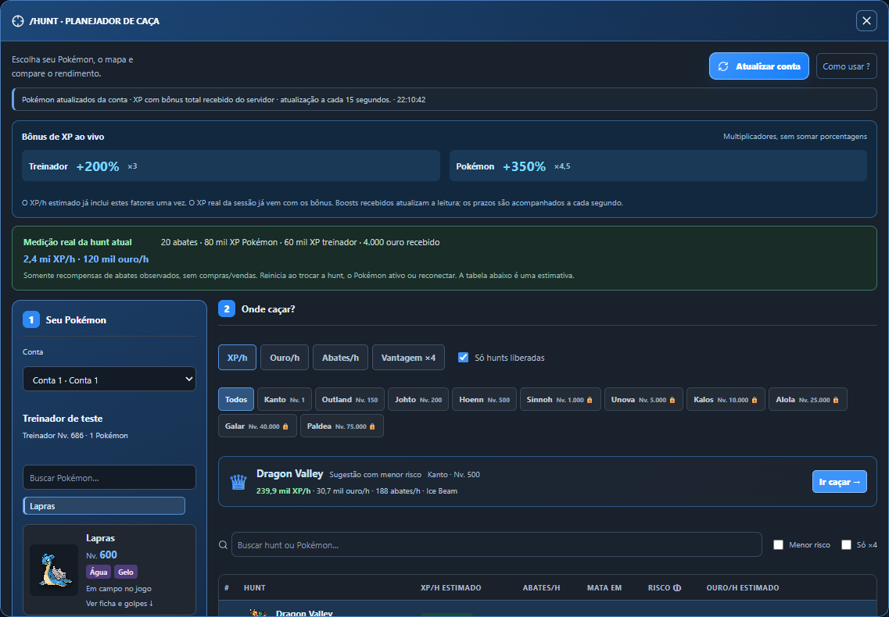
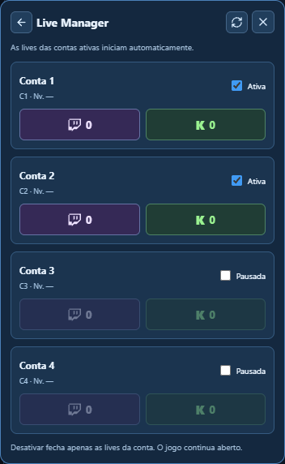
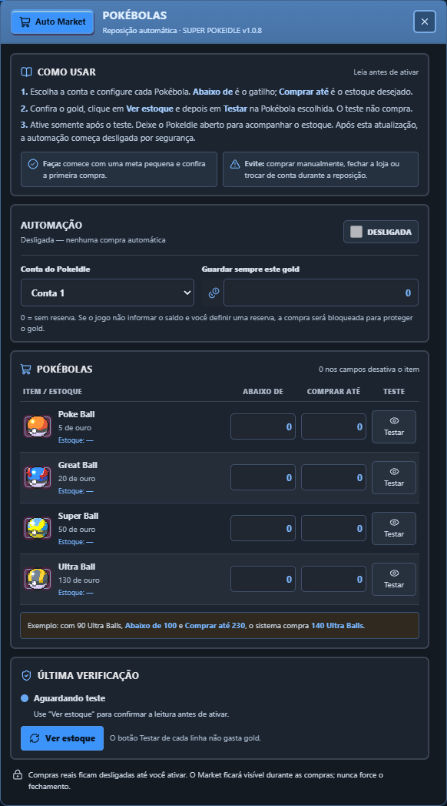
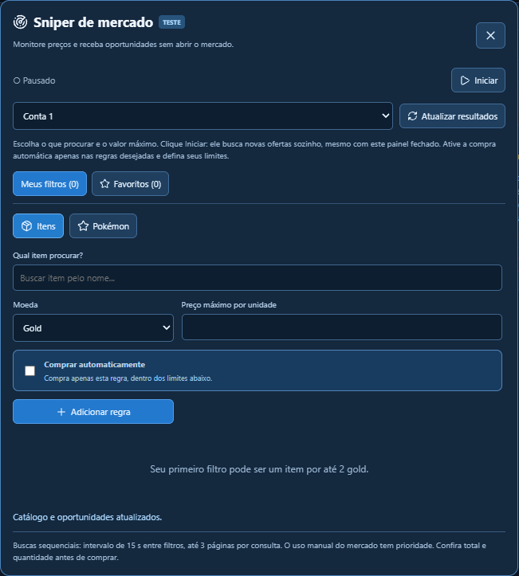

Suas contas, organizadas.
Alterne entre contas, acompanhe seus perfis e reúna informações na sessão completa. Uma central para manter o jogo e suas ferramentas por perto.
Do /hunt ao Live Manager, do Auto Market ao Sniper: organize suas contas, escolha suas lives e acompanhe tudo no modo de grade. Sua jornada, com mais controle.
Organize. Acompanhe. Explore.
Composição ilustrativa dos recursos. A interface pode variar.
/hunt integrado, lives por preferência, Auto Market, Sniper e modo de grade. As ferramentas da sua rotina, no mesmo lugar.
Alterne entre contas, acompanhe seus perfis e reúna informações na sessão completa. Uma central para manter o jogo e suas ferramentas por perto.
Ative ou desative as contas que participam das lives e escolha os canais permitidos nas preferências. Acompanhe Twitch e Kick pelo Live Manager.
/hunt integradoDesenvolvido em conjunto com o SUPER POKEIDLE, o /hunt usa os dados de XP da sua sessão para apresentar XP por hora e estimativas de drops por hora. Compare hunts e acompanhe seu rendimento sem sair do sistema.
XP/h · drops/h · planejamento de caçaVisualize várias contas lado a lado e acompanhe o jogo em uma única área de trabalho. Uma visão mais ampla para sua rotina.
Configure suas regras de mercado, confira o estoque e teste suas opções antes de ativar. Você define como a ferramenta participa da sua rotina.
Regras e controles no mesmo painelMonitore itens e Pokémon com filtros e valor máximo. Escolha alertas ou configure compra automática apenas nas regras desejadas, com limites definidos por você.
Filtros · favoritos · limites de compraConsulte o painel de evolução e organize seus próximos passos sem perder o contexto da sua jornada.
Configure notificações, acompanhe informações da sessão e ajuste as preferências. Contas, lives e ferramentas reunidas em um só lugar.
As estimativas do /hunt são referências. Confira regras, valores e limites antes de ativar ações automáticas no mercado.
Capturas dos painéis da versão 1.0.8, usando dados de demonstração. Clique em um print para ampliar.




Dados e valores de exemplo. As capturas não mostram contas pessoais nem resultados garantidos.
Uma instalação para Windows, com o componente de navegação da Microsoft e serviços online já configurados.
Ver versões e notasSem cadastro no SUPER POKEIDLE e sem código de ativação. Você usa seus próprios logins do jogo e das plataformas.
Use o botão de download desta página para obter a versão pública pelo GitHub.
Execute o setup e siga as etapas. Mantenha a internet conectada para instalar o WebView2, se preciso.
Abra o aplicativo, faça seus logins e escolha as ferramentas que quer usar.
A edição pública é gratuita e não exige licença, chave ou código de ativação para instalar e abrir o aplicativo.
Esta página distribui gratuitamente o instalador. O código-fonte completo do aplicativo ainda não está publicado com uma licença open source; gratuito e open source são condições diferentes.
Esta versão foi preparada para Windows 10 e 11 de 64 bits. Não há pacote para Android, iOS, macOS ou Linux nesta distribuição.
Não. Reprodução, pontos e bônus dependem das regras e do reconhecimento de cada plataforma e do jogo. Confirme o status dentro deles.
O aplicativo ainda não possui certificado comercial de assinatura de código. Confira a origem do download e o SHA256 no manifesto da release. Feche a versão anterior antes de atualizar. A instalação em outro computador ainda precisa de validação.
SUPER POKEIDLE é um projeto independente. Pokémon e as marcas, personagens e plataformas mencionadas pertencem aos respectivos titulares; sua presença não indica afiliação ou endosso.
Baixe o SUPER POKEIDLE e organize sua jornada.
Baixar para Windows Outras opções de download e verificação SHA256 ↗